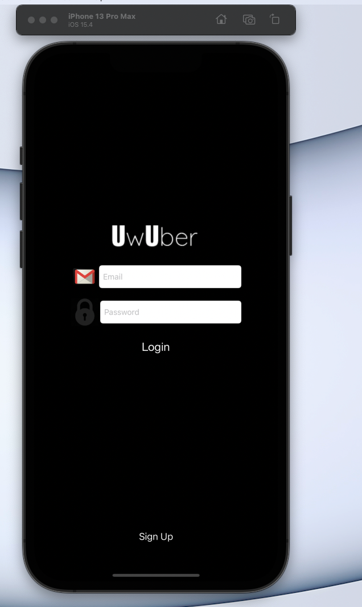
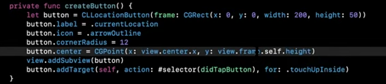
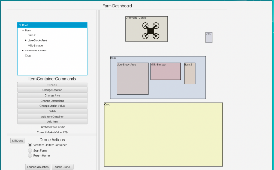
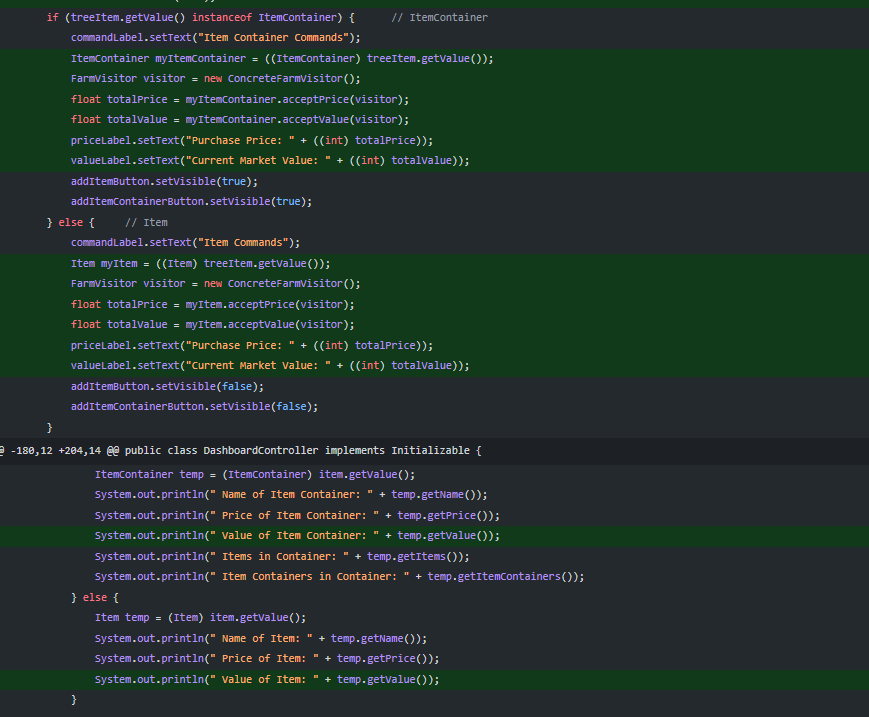
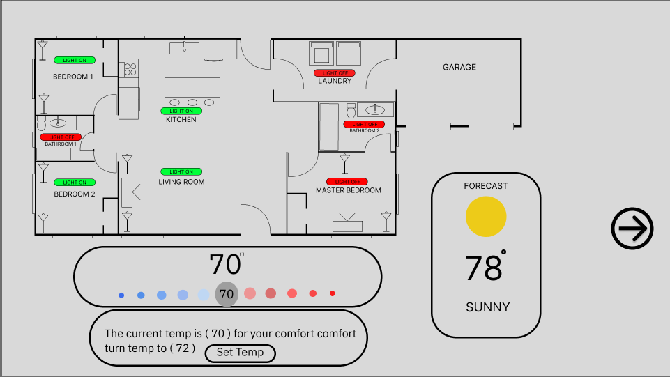
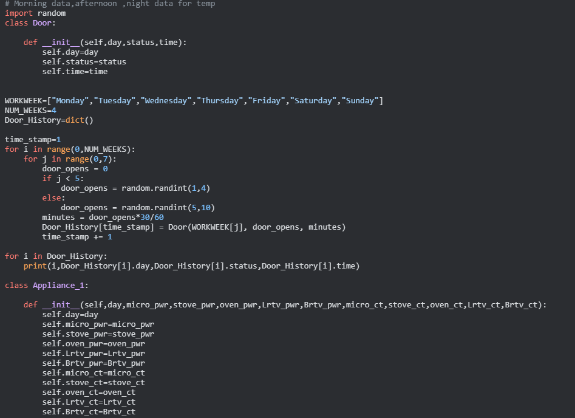

The first project that I have worked on was an IPHONE app called "UwUber". The app taught me a lot about how IPhone applications works as well as api calls. It was a group project in which we used a firebase to store a unique user name as well as password to demonstrate different scenarios. The app also had used the apple maps api in order to help us get the user location so that we could "Call" a ride for the user. The app was never fully complete with the cost of "ride" never being calculated but this was a great starting point for my interest in Swift based apps.
 The Drone project was one of the most familiar projects to me. It involved working with an SDK which was something that i used to work a lot with back when I did Robotics in middle and high school.This project was a group project where I would help with building the main JavaFx screen that the user will interact with as well as the logic behind it. The project started off rough due to poor communication from the TA's and the requirements changing every second. But at the end we were able to have the best project in the class as well as the best presentation.
 This was my Capstone project which we had no restrictions except make sure to deliver a smart home thermostat with that can do some basic functions. This was a group project in which I help to code the python backend and the logic. This project had used a database with to store the information gathered from the smart home thermostat to calculate usage of air, water, and power then calculate the cost. This project also introduced me to Html, Css and Java script. This is one of if not the best College project to date
 